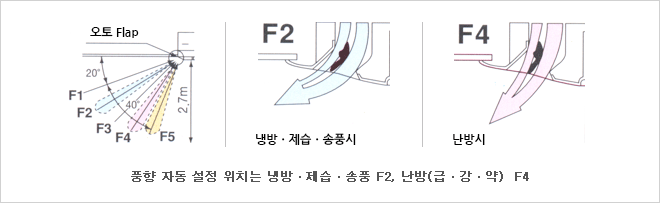

Outdoor Unit of Air Conditioner

Leader of cutting edge technology
Pride of LOTTE E&M is more than usual
This innovative circular design blends harmoniously into any type of interior design.
Characteristics per model
| Type | Horsepower | Cooling [kW] | Heating [kW] |
|---|---|---|---|
| 224type | 8 hp | 22.4 KW | 28.0KW(H1 series), 26.5KW(J1 series) |
| 280type | 10 hp | 28.0 KW | 33.5 KW |
| 355type | 13 hp | 35.5 KW | 42.5 KW |
| 450type | 16 hp | 45.0 KW | 53.0 KW |
| 560type | 20 hp | 56.0 KW | 67.0 KW |
Indoor Unit of Air Conditioner
Leader of cutting edge technology
Pride of LOTTE E&M is more than usual
This innovative circular design blends harmoniously into any type of interior design.
- Improving workability (28–160 type)
- Separate the refrigerant pipe and drain pipe location into a corner to connect the pipe and insulate the drain pipe.
- Indoor equipment of different capacities can be controlled individually by up to 24 refrigerant piping systems
- Mount an automatic swing device that blows wind in a wide space (28–160 type)
- 
- Respond to high ceiling installation (28–160 type)
- If you insert an HT Tap transition relay into the fan motor wiring, you can increase the number of fan motor rotations by one step to the ceiling height of 3.2m with a 4-way discharge in case of a 4-way discharge. (Normal ventilation up to 3.0 m in use)
- Drain height from ceiling surface up to 80 cm (28–160 type)
- The drain height of up to 25cm is longer than the existing product, so it can correspond to long ceiling piping.
- 280type
- Large capacity system optimal for large stores
- product height 33.5cm
- Large capacity, but its thin design is 33.5 cm in height, so it can also be applied when the ceiling is narrow.
- Embedded drain pump, Basic long-life filter
- Large capacity to minimize the number of installations, save on piping construction costs
- The number of installations can be reduced even in a large space, and the cost of equipment and plumbing can be saved.
- Release reach up to 4 m
- However, type 280 is a manual wind direction setting and group control is not allowed.